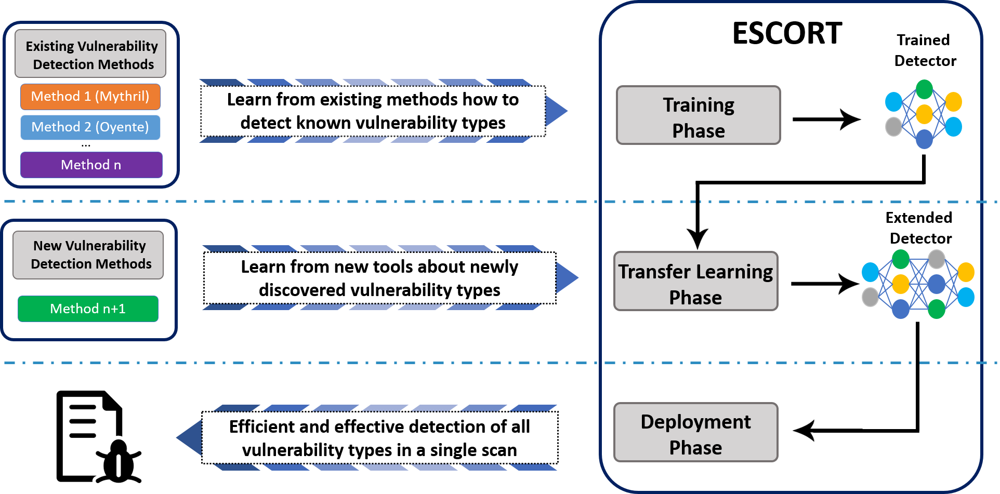
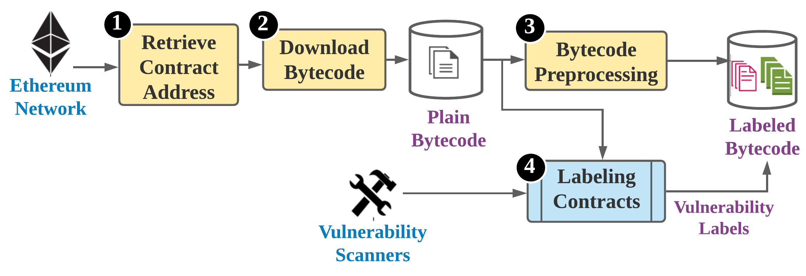
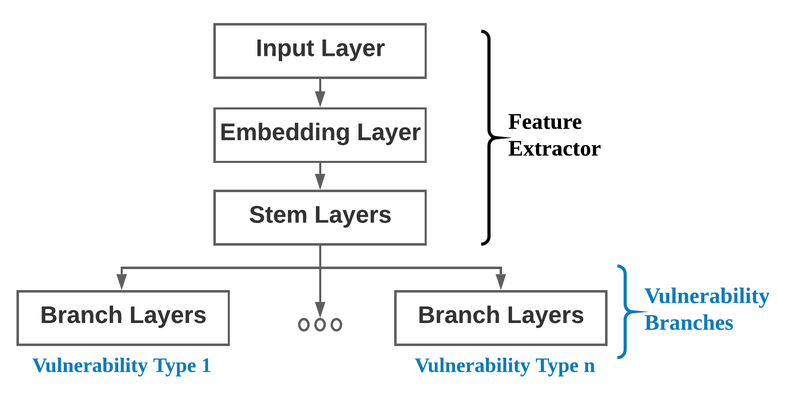

What are Smart Contracts?
Smart Contracts are computer programs that execute on a blockchain. The nature of blockchains allows one to run Smart Contracts in a trustless and decentralized environment. While different projects implement the concept of Smart Contracts, we concentrate on EVM-based blockchains and use Ethereum as our primary example, as it is the most popular, adopted, and advanced implementation.
At first glance, those Smart Contracts seem rather abstract – code running in a VM on a blockchain. However, they provide the underlying technology in a vast and fast-growing ecosystem of NFTs, decentralized applications, and – of course – CryptoKitties. All of those systems have an invested interest of million and even billion dollars. Ethereum itself has a market cap of over 250 billion USD. Furthermore, all of those systems use the fundamental promise of trustless execution, where no trusted 3rd parties are needed to establish trust between two strangers on the Internet.
Generally, Smart Contracts for EVM-compatible blockchains are written in a scripting language and compiled into so-called bytecode. Then, the bytecode is included in the blockchain via a transaction and executed by the miners (or validators in blockchains with stacking-based consensus algorithms). Once the bytecode is on the blockchain, everybody can see the Smart Contract’s bytecode and even issue transactions to execute functionalities of them.
Why should we care about Smart Contract vulnerabilities?
The inherently public nature of deployed Smart Contracts and the possible financial incentives make Smart Contracts perfect targets for malicious actors. Historically, attackers were successful with their attacks and could steal millions, for example, exploiting the DAO contract. Not only that, but vulnerabilities in Smart Contracts undermine the benefits of trustless execution. For example, the other party could plant vulnerabilities in Smart Contracts to exploit them later and invalidate the intent of the Smart Contract to steal money.
Why use ML and Transfer Learning?
To detect vulnerabilities in Smart Contracts, researchers and developers proposed many detection tools (Mythril, Oyente, MadMax, Vandal, etc.). Most of those tools apply static and dynamic code analysis in addition to fuzzing. While the security community widely adopted those tools, most of them have a substantial execution time of several seconds to minutes. Furthermore, specific tools only allow testing for a subset of potential security issues, which leads to a need to run and test Smart Contracts with multiple different tools. As a result, Smart Contract developers and users would need to deploy, understand and manage several security tools to test for most vulnerability classes.
In recent years classification and labeling of pictures, text, and also malware using Machine Learning arose. As such, the detection of vulnerabilities in Smart Contracts using Machine Learning is the next logical step towards a more secure ecosystem. Furthermore, Machine Learning allows us to speed up the detection processes and combine different tools into one classification process. ML models enable developers and users to test Smart Contract bytecode near-instant without deploying a complex vulnerability detection.
In classical Machine Learning, the training process is bound to a pre-defined set of labels and classes. So, once trained, a Machine Learning model can only detect an unchanging set of vulnerabilities. To alleviate this restriction, we apply the concept of Transfer Learning. Once a model is trained, we can reuse it to modify its labels (i.e., outputs) or even inputs without retraining the entire model. Transfer Learning, therefore, makes the ML model extendable and cuts back at overall training time.
Our Work towards Security of Smart Contracts
In our work, we demonstrate the effectiveness of Transfer Learning in the domain of Smart Contract vulnerabilities. Specifically, we propose to use Transfer Learning to enable the extensibility of our Machine Learning model in regards to vulnerability classes. Moreover, we show the clear benefit of Transfer Learning by successfully classifying even underrepresented vulnerability classes.
ESCORT [1]
We developed a practical tool-chain to apply Transfer Learning based on vulnerability classes of Smart Contracts in this work. Our high-level execution flow can be seen in this graphic:

We first label the smart contracts applying different smart contract vulnerability detection tools bundled in our ContractScraper – each posses scan capabilities for different vulnerability types. Then, we train, test, and validate our extensible multi-label model with ESCORT. Suppose developers find new vulnerabilities or extend the capabilities of current tools at a later point in time. In that case, we can only train on new and underrepresented data to achieve a well-performing model. During deployment, developers can quickly test their smart contracts with ESCORT.
ContractScraper

The high-level flow of ContractScraper is straightforward. First, ContractScraper extracts the addresses of smart contracts and then their bytecode from the blockchain network. For this task, we included several different APIs, such as Infura, Ethereum ETL and Dedaub’s Contract Library. With the plain bytecode, we scan the bytecode for vulnerabilities using Mythril, Dedaub and Oyente. We also already preprocess the bytecode for Machine Learning, applying different rules to prepare the bytecode for inclusion into ESCORT. In total, the bytecode of 1.156.611 Smart Contracts is classified by the three detection tools, allowing us to label Smart Contracts with eight unique vulnerability classes.
ESCORT

As seen above, our high-level model architecture consists of two parts. The first part is the Feature Extractor. Here, the model learns the fundamental structure of smart contract bytecode. The second part is the Vulnerability Branches. Here, we can extend the model with new vulnerability branches exclusive to a single vulnerability class. We train our model first with six different classes and then use Transfer Learning to extend our model to two additional classes. Here, we achieved a substantially lower inference time of 0.02s, improved training time, and a mean F1-score of 95%. ESCORT can then be used to classify bytecode in an on-the-fly manner.
Publications
- [1] ESCORT: Ethereum Smart COntRacTs Vulnerability Detection using Deep Neural Network and Transfer Learning by Oliver Lutz (University of Würzburg), Huili Chen (University of California, San-Diego), Hossein Fereidooni (TU Darmstadt), Christoph Sendner (University of Würzburg), Alexandra Dmitrienko (University of Würzburg), Ahmad Reza Sadeghi (TU Darmstadt), and Farinaz Koushanfar (University of California, San Diego). Paper available as pre-print.